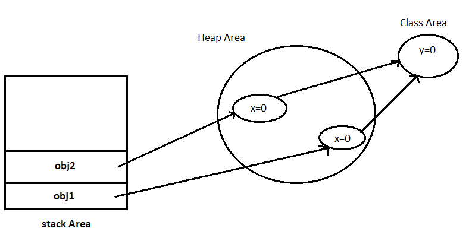

A class can have the following types of static members.
Static variables gets memory only once in class area at the time of class loading.
It is useful when we want to share a common property to all objects.
Example :-
class Demo {
int x;
static int y;
public static void main(String[] args) {
Demo obj1 = new Demo();
Demo obj2 = new Demo();
}
}
There will be a single copy of y created for all objects of Demo class.

A static method can access other static data or static methods in the same class directly object is not required.
A static method cant access non-static method or non-static data an object is required.
Example :-
class Demo {
int x;
static int y;
static void show(){
System.out.println(y);
}
public static void main(String[] args) {
show();
}
}
Output:- 0